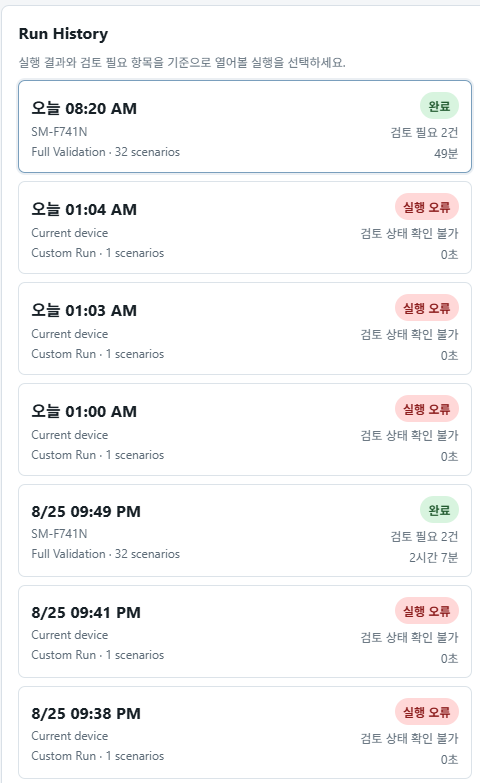

대시보드 02 · 검증 근거
검증 상태
무엇을 실행할 수 있는지와 어떤 날짜의 실행 근거가 있는지를 분리합니다. 이 페이지는 결과를 새로 생성하지 않습니다.
32전체 검증 범위
3실행 방식: Full · Smoke · Custom
1저장소 기본 enabled 설정
주의최신 물리 단말 근거
기록된 근거에 최신 `main`의 새로운 32개 물리 단말 Full Validation 승인 결과가 없습니다. 이는 제품 FAIL 판정이 아니라 검증 근거의 최신성 상태입니다.
현재 검증 구조
Full
32개 전체 검증 시나리오
Clean launch, Full mode, Coverage Probe, Evidence Ledger, Identity V2, Production Traversal V2, Profiler를 포함합니다.
Smoke
빠른 대표 확인
회귀·환경 확인용 부분 실행이며 Full 승인과 다릅니다.
Custom
특정 문제 재현
부분 시나리오 선택 또는 대상 문제를 집중 조사하기 위한 입력입니다.

문서에 기록된 근거
현재 문서에 남은 검증 승인 범위
| 근거 | 표시 방식 | 현재 해석 |
|---|---|---|
| 2026-07-03 그룹 검증 | Global `7/7`, Life `12/12`, Device `12/12`와 ko/en 대표 Smoke | 날짜·그룹별 검증 근거 |
| Phase 8 / 8.5 | Identity/traversal, 복구, 결과 대조 | 해당 단계 점검 |
| Phase 9.5 / 9.5.1 | Full Run/regression 및 RCA | 과거 승인과 수정 기록 |
| Phase 10 | offline/comparator controlled/manual 승인 | 물리 단말 Full PASS 근거 아님 |